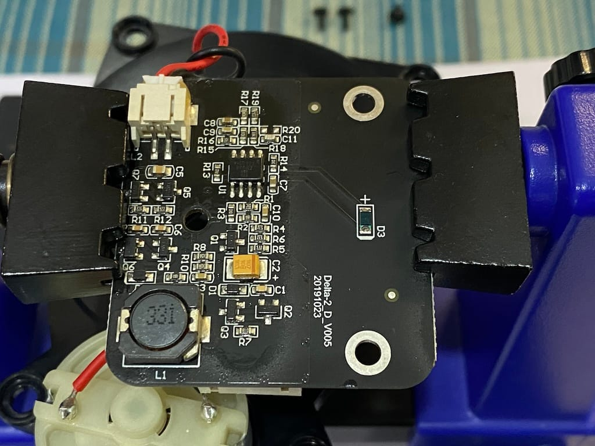
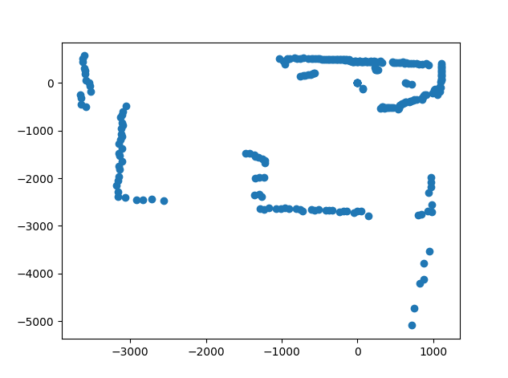
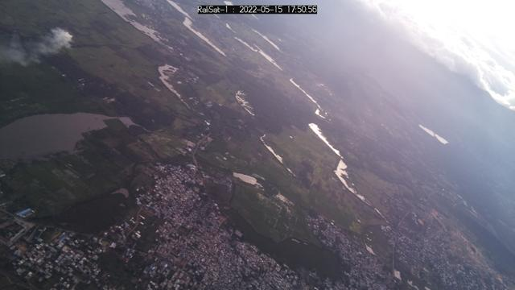
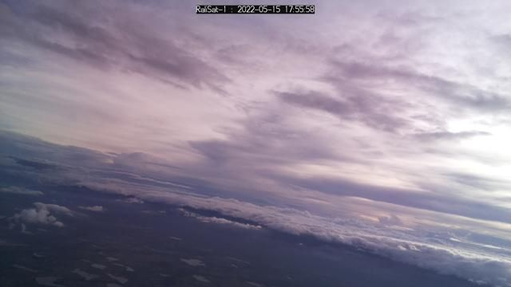
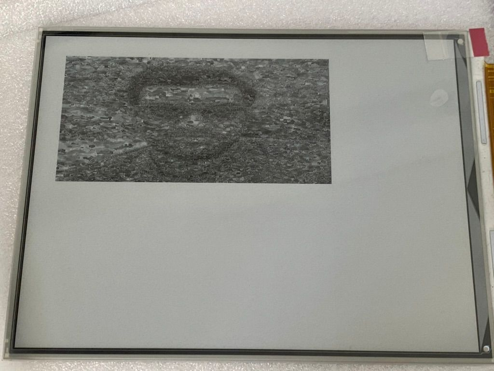

<?xml version="1.0" encoding="UTF-8"?><rss xmlns:dc="http://purl.org/dc/elements/1.1/" xmlns:content="http://purl.org/rss/1.0/modules/content/" xmlns:atom="http://www.w3.org/2005/Atom" version="2.0" xmlns:media="http://search.yahoo.com/mrss/"><channel><title><![CDATA[Small World]]></title><description><![CDATA[Random ideas, and attempts]]></description><link>https://codetiger.github.io/blog/<image><url>https://codetiger.github.io/blog/favicon.png</url><title>Small World</title><link>https://codetiger.github.io/blog/</image><generator>Ghost 5.93</generator><lastbuilddate>Sun, 15 Sep 2024 06:37:06 GMT</lastbuilddate><atom:link href="https://codetiger.github.io/blog/rss/" rel="self" type="application/rss+xml"><ttl>60</ttl><item><title><![CDATA[Learning Rust lang by implementing a Ray Tracing renderer using AI]]></title><description><![CDATA[<h2 id="ray-tracing-my-go-to-experiment-for-learning-new-languages"><strong>Ray Tracing: My Go-To Experiment for Learning New Languages</strong></h2><p>Whenever I want to learn a new programming language, explore an acceleration framework, or dive into a new chipset or math co-processor, my go-to experiment is implementing a ray tracing renderer. It&#x2019;s a concept that&#x2019;s simple to</p>]]></description><link>https://codetiger.github.io/blog/learning-rust-lang-by-implementing-a-ray-tracing-renderer-using-ai/<guid ispermalink="false">66e6565fbdd6de40ed31f2d7</guid><category><![CDATA[Ray Tracing]]></category><category><![CDATA[Rust]]></category><category><![CDATA[Programming]]></category><dc:creator><![CDATA[Harishankar]]></dc:creator><pubdate>Sun, 15 Sep 2024 06:17:02 GMT</pubdate><media:content url="https://codetiger.github.io/blog/content/images/2024/09/output.png" medium="image"><content:encoded><![CDATA[<h2 id="ray-tracing-my-go-to-experiment-for-learning-new-languages"><strong>Ray Tracing: My Go-To Experiment for Learning New Languages</strong></h2><p>Whenever I want to learn a new programming language, explore an acceleration framework, or dive into a new chipset or math co-processor, my go-to experiment is implementing a ray tracing renderer. It&#x2019;s a concept that&#x2019;s simple to grasp but offers endless possibilities for code optimization, making it a great starting point that&#x2019;s deceptively challenging to perfect in terms of performance. Over the past two decades, I&#x2019;ve experimented with at least 50 variations of this.</p><h2 id="why-rust-overcoming-my-biases-as-a-c-developer"><strong>Why Rust? Overcoming My Biases as a C Developer</strong></h2><p>This time, I decided to tackle Rust, a language that has been on my to-learn list for quite a while. I&#x2019;ve often heard that C developers tend to love Rust, but my deep attachment to C made me reluctant to explore alternatives. For most of my personal projects, I default to either C or Python unless a company or platform forces me to branch out. Still, I set my biases aside to discover what makes Rust so compelling&#x2014;especially since it&#x2019;s gaining traction within the open-source community. While most new languages have large corporate sponsors&#x2014;like Shopify for Ruby, Facebook for PHP, and Google for Kotlin, Go, and Dart&#x2014;Rust&#x2019;s rise seems to have come from nowhere, which makes its growing popularity in the OSS world particularly intriguing.</p><h2 id="exploring-three-approaches-to-learning-rust"><strong>Exploring Three Approaches to Learning Rust</strong></h2><p>This time, I decided to approach learning a new programming language using three different methods:</p><ol><li><strong>Classic Development</strong>: Using Google Search and VSCode.</li><li><strong>AI-Guided Development</strong>: Using Google Search, VSCode, and GitHub Copilot.</li><li><strong>AI Co-Development</strong>: Using ChatGPT (o1-preview) alongside a compiler.</li></ol><p>To ensure that the learning order didn&#x2019;t skew the results, I warmed up my Rust syntax with small examples beforehand for couple of hours. Since I&#x2019;m already very familiar with the problem I&#x2019;m tackling, the order of these approaches shouldn&#x2019;t affect the outcome much.</p><h2 id="the-experiment-writing-a-ray-tracing-renderer-in-rust"><strong>The Experiment: Writing a Ray Tracing Renderer in Rust</strong></h2><p>The goal of this experiment is to write a ray tracing renderer from scratch, starting from the conceptual level and moving toward a basic implementation. Performance optimizations will be considered a bonus but are not part of the completion criteria. Ultimately, I want to document the overall experience of each development approach and compare the time taken for each.</p><h2 id="results-experience-time-taken"><strong>Results: Experience &amp; Time taken</strong></h2><figure class="kg-card kg-image-card"></figure><h2 id="verdict">Verdict</h2><p>After dedicating a weekend to this experiment, my journey into learning Rust yielded unexpected insights beyond the initial scope. While AI-guided development initially appeared as the optimal or safer choice, the introduction of the o1-preview model in ChatGPT dramatically shifted my perspective.</p><h3 id="experience">Experience</h3><p>The effectiveness of any development approach hinges on a deep understanding of both the problem at hand and fundamental programming concepts. This knowledge guards against the occasional missteps or &#x2018;hallucinations&#x2019; AI might produce, underlining the unique advantages of human oversight. Some colleagues argue that a proficient product manager could leverage AI tools like ChatGPT to generate functional code, and while this might hold for prototypes or early development stages, constructing a robust system demands a thorough understanding of both technological and practical aspects to correct AI biases.</p><h3 id="information-security"><strong>Information Security</strong></h3><p>A significant hurdle preventing broader AI integration in professional settings is the concern over information security. The industry is rife with discussions on this topic. AI-guided development can risk exposing the entire codebase to the model, creating potential liabilities for the information security of the organization. Conversely, the co-development approach&#x2014;akin to Apple&#x2019;s strategy&#x2014;allows the developer to control what information the AI accesses, typically limited to the specific class or function being worked on, thereby enhancing security.</p><h3 id="final-words">Final words:</h3><p>AI co-development is poised to revolutionize how we code. It partners with the developer like a knowledgeable peer programmer, engaging in meaningful dialogue and aiding in co-development. The challenge remains in refining the user experience to integrate ChatGPT effectively without compromising information security. Once that balance is achieved, AI co-development will undoubtedly shape the future of programming.</p><p><strong>Final Code</strong>: <a href="https://github.com/codetiger/RayTracingRust?ref=localhost">https://github.com/codetiger/RayTracingRust</a></p>]]></content:encoded></item><item><title><![CDATA[PowerTiger - Monitoring energy consumption with better granularity]]></title><description><![CDATA[<p>A few years before the Covid pandemic, I set out to apply my tech skills to everyday life with the goal of enhancing my lifestyle. Having worked extensively in product development, I found that tracking key metrics often led to long-term improvements. After repeatedly seeing the benefits at work, I</p>]]></description><link>https://codetiger.github.io/blog/powertiger-monitoring-energy-consumption-with-better-granularity/<guid ispermalink="false">66d846ce78023e28b3efe465</guid><category><![CDATA[electronics]]></category><category><![CDATA[raspberry pi]]></category><category><![CDATA[monitoring]]></category><category><![CDATA[home]]></category><category><![CDATA[iot]]></category><dc:creator><![CDATA[Harishankar]]></dc:creator><pubdate>Thu, 05 Sep 2024 04:31:05 GMT</pubdate><media:content url="https://codetiger.github.io/blog/content/images/2024/09/pcb-render.png" medium="image"><content:encoded><![CDATA[<p>A few years before the Covid pandemic, I set out to apply my tech skills to everyday life with the goal of enhancing my lifestyle. Having worked extensively in product development, I found that tracking key metrics often led to long-term improvements. After repeatedly seeing the benefits at work, I realized it was time to use these skills for personal growth. While the Covid lockdown made things more challenging, it also gave me plenty of time to reflect and plan.</p><p>After running my initial <a href="https://codetiger.github.io/blog/home-power-consumption-monitoring-using-esp32/" rel="noreferrer">home energy monitoring</a> setup for nearly three years, I decided it was time to revisit and enhance the project. My priorities have shifted, and now I aim to capture data with much higher granularity&#x2014;ideally down to each individual electric terminal, which would provide insight into specific devices. Going beyond that would require significant changes to the electrical setup, so monitoring each terminal became the most practical solution.</p><p>Adding a CT sensor to each terminal can be easily done at the home&#x2019;s power distribution board, where all the terminals converge. This setup allows for convenient interfacing of all the CT sensors in one location, achieving the desired level of detail. In Indian homes, each room typically has a dedicated circuit breaker for its terminals, often split for high-power appliances like geysers or air conditioners. This arrangement simplifies the process of obtaining granular data by focusing on the master distribution board.</p><p>At my home, we have 16 circuit breakers in the distribution board, so I set out to build a device capable of monitoring all 16 circuits. Initially, I planned for 20 interfaces, including the main 3-phase entry points, but the PCB design became unnecessarily complex beyond 16 channels. To keep the design manageable, I decided to cap it at 16 while also incorporating the flexibility for future expansion. The board is designed to be easily multiplexed, allowing for additional channels if needed down the line.</p><figure class="kg-card kg-image-card"></figure><p>Having gained solid experience in designing custom PCBs, I decided to create one for this project. At the core of the device is an I2C multiplexer (PCA9546 by Texas Instruments), which interfaces with eight ADCs&#x2014;analog-to-digital converters (ADS1115 by Texas Instruments). Each ADC is connected to a pair of 3.5mm audio jacks, where the CT sensors are plugged in. Despite the relatively high cost of these ICs, I chose them to ensure the board maintains the highest quality and performance standards. There are many cheaper alternatives available that could be considered if top-tier quality isn&#x2019;t the primary concern. However, for this project, I opted for more reliable, higher-quality components to ensure accurate and consistent performance over time.</p><figure class="kg-card kg-image-card"></figure><p>The board layout isn&#x2019;t visually perfect, but it serves its purpose well and allows for easy installation. My one regret is the spacing between the audio jacks, which is a bit tight, making it challenging to plug in all the sockets at once. However, aside from that, the rest of the design turned out flawless, even in the first batch of fabrication.</p><figure class="kg-card kg-image-card"></figure><p>In my setup, the PCB is connected to my favorite MCU module, the Raspberry Pi Pico W, via I2C connections. Since I already have a home server handling various tasks, I decided to go with an MCU-based setup featuring WiFi capability. The home server polls the device to collect data. Once again, I used my go-to tools: Prometheus for data gathering and storage, and Grafana for visualization and UI access, making it easy to monitor and analyze the collected data.</p><figure class="kg-card kg-image-card"></figure><p>The final output of the setup is a Grafana dashboard, which provides a clear and interactive interface for visualizing the data. Through this dashboard, I can easily monitor energy usage across different circuits in real-time, track trends, and identify patterns. Grafana&#x2019;s flexibility allows me to customize the graphs and layouts, giving me full control over how the data is presented. This makes it simple to dive deep into specific metrics or view the overall energy consumption at a glance, completing the home energy monitoring system with an intuitive and powerful visual tool.</p><p>The PCB is available for purchase through the link below. Please note that this board is not mass-produced or intended for large commercial distribution. Additionally, I prioritized quality over cost, opting for higher-quality ICs instead of cheaper alternatives. As a result, the price is currently higher. I&#x2019;m also collaborating with local vendors to make this module more accessible in India, and I&#x2019;m hopeful that this will help reduce costs and improve availability soon. Stay tuned for updates on that front!</p><p>Tindie link: <a href="https://www.tindie.com/products/35688/?ref=localhost">https://www.tindie.com/products/35688/</a> <br></p>]]></content:encoded></item><item><title><![CDATA[Decoding 2D Lidar Data: Interfacing Sensor from Robotic Vacuum Cleaner 3irobotix CRL-200S]]></title><description><![CDATA[<p>After removing the Lidar sensor from my robotic vacuum cleaner, my curiosity was around how this remarkable device operates. My goal was to understand the interface protocol and the inner workings of the sensor. To achieve this, I aimed to write a simple Python script to decode and plot the</p>]]></description><link>https://codetiger.github.io/blog/decoding-2d-lidar-data-interfacing-sensor-from-robotic-vacuum-cleaner-3i-crl-200s/<guid ispermalink="false">668abd66d9b9c091dc1de3dc</guid><category><![CDATA[Lidar Sensor]]></category><category><![CDATA[Robot]]></category><category><![CDATA[electronics]]></category><category><![CDATA[Programming]]></category><dc:creator><![CDATA[Harishankar]]></dc:creator><pubdate>Sun, 07 Jul 2024 17:18:00 GMT</pubdate><media:content url="https://codetiger.github.io/blog/content/images/2024/07/Delta2d-board-1.jpg" medium="image"><content:encoded><![CDATA[<p>After removing the Lidar sensor from my robotic vacuum cleaner, my curiosity was around how this remarkable device operates. My goal was to understand the interface protocol and the inner workings of the sensor. To achieve this, I aimed to write a simple Python script to decode and plot the sensor readings, providing a visual insight into the Lidar&#x2019;s functionality.</p><figure class="kg-card kg-image-card"></figure><h2 id="interface"><strong>Interface</strong></h2><p>From various posts on the internet, I discovered that most Lidar devices utilise a simple UART interface. However, I was cautious to protect my Mac Mini&#x2019;s ports from potential damage. To safeguard my Mac Mini, I used a USB hub and a USB to UART module as a shield. Identifying the pin functions was relatively straightforward using the continuity feature of a multimeter. Although numerous articles cover this topic, I wanted to double-check the connections myself, given I had a multimeter readily available.</p><figure class="kg-card kg-image-card"></figure><figure class="kg-card kg-image-card"></figure><h2 id="protocol">Protocol</h2><p>Once I connected the device to my computer, I used the CoolTerm app to access the data from the USB serial port. Initially, the data appeared to be junk, but I soon noticed some pattern. After some analysis and consulting the datasheet of a similar device, I managed to decode the protocol design.</p><ul>
<li>Data Packet Structure:
<ul>
<li>Chunk Header: 1 byte</li>
<li>Chunk Length: 2 bytes</li>
<li>Chunk Version: 1 byte</li>
<li>Chunk Type: 1 byte</li>
<li>Command Type: 1 byte</li>
<li>Payload Length: 2 bytes</li>
<li>Payload Data: Variable length based on Payload Length</li>
<li>Payload CRC: 2 bytes</li>
</ul>
</li>
<li>Command Types:
<ul>
<li>CMDTYPE_HEALTH (0xAE): Indicates health check data.</li>
<li>CMDTYPE_MEASUREMENT (0xAD): Contains measurement data including angle and distance information.</li>
</ul>
</li>
</ul>
<h3 id="payload-structure">Payload structure</h3><ul>
<li>Offset Angle: 2 bytes, multiplied by 0.01 to get the offset angle in degrees.</li>
<li>Start Angle: 2 bytes, multiplied by 0.01 to get the starting angle in degrees.</li>
<li>Sample Count: Calculated as <code>((PayloadLength - 5) / 3)</code>. Each sample includes:
<ul>
<li>Signal Quality: 1 byte, representing the quality of the signal.</li>
<li>Distance: 2 bytes, multiplied by 0.25 to get the distance in millimeters.</li>
<li>Angle: Calculated as  <code>StartAngle + (SampleIndex * (360 / (16 * SampleCount)))</code>  for each sample  i .</li>
</ul>
</li>
</ul>
<h2 id="result">Result</h2><p>After some tuning, the plot looks interesting and works as expected. The visual representation closely mirrors the surrounding environment, dynamically updating in real-time as the sensor detects changes. When I block the sensor at various angles, the plot adjusts accordingly, showcasing the sensor&#x2019;s responsiveness and accuracy.</p><figure class="kg-card kg-image-card"></figure><h2 id="conclusion">Conclusion</h2><p>Next up, I&#x2019;ll be tackling the robot wheels. Stay tuned for my next article where I&#x2019;ll dive into getting those wheels moving and integrating them with the Lidar sensor for some cool autonomous navigation! </p>]]></content:encoded></item><item><title><![CDATA[AI assisted coding (GitHub Copilot) and never going back]]></title><description><![CDATA[<p>It began when the CTO at my workplace, where I&apos;m currently employed full-time, proposed, &quot;Let&apos;s give GitHub Copilot a try; it could cut down engineers&apos; time by 40%.&quot; He reiterated this idea several times, and my first reaction was a mix of skepticism</p>]]></description><link>https://codetiger.github.io/blog/github-copilot-ai-assisted-coding/<guid ispermalink="false">65d202af5399d0a5df72c5b1</guid><category><![CDATA[Programming]]></category><dc:creator><![CDATA[Harishankar]]></dc:creator><pubdate>Sun, 18 Feb 2024 15:40:41 GMT</pubdate><media:content url="https://codetiger.github.io/blog/content/images/2024/02/624fc9c8-222e-4af8-bc57-dd6d020ec1e3.jpg" medium="image"><content:encoded><![CDATA[<p>It began when the CTO at my workplace, where I&apos;m currently employed full-time, proposed, &quot;Let&apos;s give GitHub Copilot a try; it could cut down engineers&apos; time by 40%.&quot; He reiterated this idea several times, and my first reaction was a mix of skepticism &#x1F60F; and curiosity &#x1F914;. This reaction stemmed from a past encounter with a different organisation&apos;s CTO who had proclaimed, &quot;Coding is a thing of the past; the world has moved on to connecting components like plug and play.&quot;</p><p>Here&apos;s my personal feedback after experimenting with GitHub Copilot for a few days on my personal project</p><h3 id="tldr">TL;DR</h3><ol><li>Never code without an AI assistance (GitHub Copilot for now) from now.</li><li>Does it save 40% of engineering effort? Probably much more.</li><li>Does it take the job of an engineer? Hell NO.</li></ol><h3 id="disclaimer">Disclaimer</h3><ol><li>The feedback is based on my personal experience while working on my weekend project.</li><li>Am not a legal advisor so deal with your legal team before making decisions.</li><li>It&apos;s ok to assume that am exaggerating, coz my initial reaction was the same before I tried it myself. </li></ol><h3 id="the-bumpy-road">The bumpy road</h3><p>So, I decided to take on this side project of rebuilding one of my iOS apps just for kicks. The original version was done with Objective-C and OpenGL/Metal APIs, but now I&apos;m switching things up with SwiftUI, Swift, and SceneKit. It&apos;s my first time diving into Swift, SwiftUI, and SceneKit, and let me tell you, it&apos;s a wild ride.</p><p>This app isn&apos;t your run-of-the-mill type &#x2013; it&apos;s got heavy-duty UI design and 3D rendering going on. So, yeah, I expected a pretty gnarly learning curve. I&apos;m using Xcode on my trusty MacOS, and even though GitHub Copilot isn&apos;t officially vibing with it, there are some cool open-source extensions that make it play nice.</p><h3 id="the-type-of-driver-i-am">The type of driver, I am</h3><p>I&apos;m the kind of programmer who&apos;s always tinkering with code and building things, even if it&apos;s just for fun on my personal projects. Despite my job not requiring me to code over the past decade, I still find myself diving into it whenever I can.</p><p>Now, when it comes to programming languages, I&apos;m a bit of a polyglot. I hop between them like a squirrel in a nut store. Remembering every syntax? Nah, that&apos;s not my style. I prefer to keep my mind free and depend on good ol&apos; search engines or, more recently, the helpful nudges from ChatGPT. So, you could say I&apos;m all about that dynamic, ever-learning coding life.</p><p>I struggle with learning anything related to UI design, and dancing with div alignment in HTML and HStack/VStack in SwiftUI always frustrates me because I never seem to get it right, even after trying multiple times.</p><h3 id="the-ride-experience">The ride experience</h3><p>I kicked off this project flying solo, no AI to lend a hand, just to see how it rolls. After a week of wrestling with new programming languages, syntax, and frameworks, I thought, &quot;Why not give GitHub Copilot a spin?&quot; So, I went on with the personal subscription and slapped on those extensions. Let the coding games begin! &#x1F680;</p><h3 id="first-reaction">First reaction</h3><p>So, I fired up the same project and man, was I disappointed at first. I was half expecting fireworks&#x2014;new toolbars, a flashy AI menu, maybe even a little chatbot buddy on the side. But nope, nada. My expectations totally missed the mark.</p><p>Anyway, I dove into coding like I always do, just to see what this AI fuss was about and where it was hiding. And let me tell you, I was floored. As soon as I started typing, bam! AI suggestions started popping up left and right, tailored perfectly to what I was working on. It was like the AI had been watching over my shoulder the whole time, picking up on my coding style and preferences.</p><p>But here&apos;s the real kicker: these suggestions weren&apos;t just generic boilerplate. They were spot-on, matching my coding style and design principles to a T. It was like having a supercharged coding buddy who knew exactly what I needed before I even knew I needed it.</p><p>Suddenly, UI development felt like a breeze. No more bouncing between search engines, docs, ChatGPT, and Stack Overflow. The IDE and its sneaky AI assistant had my back, doing all the heavy lifting so I could focus on what really matters&#x2014;bringing my ideas to life.</p><p>The mind-blowing thing about how well the AI grasps the local context is just incredible. It&apos;s like the whole developer experience has had a major upgrade overnight. The last time I felt this kind of game-changing shift was...</p><ol><li>Back in the day, when Turbo-C++ rolled out with that amazing help document right there in the IDE, it was a game-changer. Before that, I was constantly flipping through a book for syntax references while coding. I can&apos;t even recall how much I appreciated the folks behind the IDE for bringing in that genius idea of contextual help. It was like a dream come true for every coder out there.</li></ol><figure class="kg-card kg-image-card"></figure><ol start="2"><li>And then, along came the internet community, with powerhouses like Stack Overflow and the trusty search engine combo, taking problem-solving to a whole new level. It&apos;s like they opened up a treasure trove of solutions, each one tackling the same problem but with a different twist. It was like having a global team of coding buddies at your fingertips, ready to lend a hand whenever you needed it.</li></ol><figure class="kg-card kg-image-card"></figure><ol start="3"><li>ChatGPT certainly pushed things forward, but it didn&apos;t quite hit the mark. Enter GitHub Copilot, taking the game to a whole new dimension. Check out this screenshot&#x2014;suggestions for the 3rd button, complete with pre-filled code snippets based on my past code. This right here is one of those jaw-dropping moments where I just couldn&apos;t believe what I was seeing. Mind blown, for real! &#x1F680;</li></ol><figure class="kg-card kg-image-card"></figure><p>If you thought UI development (declarative programming) was full of pattern similarities and easy for AI to handle, I had the same hunch and decided to test it out with Shader programming in 3D rendering. And guess what? Lightning struck twice&#x2014;it had that same wow effect all over again. It&apos;s like finding those hidden threads that connect different realms of coding, making it a wild and eye-opening ride.</p><figure class="kg-card kg-image-card"></figure><h3 id="destination">Destination</h3><p>GitHub Copilot is definitely the next logical step in the evolution of developer experience. It&apos;s no wonder why my CTO sang its praises and hyped up its potential to change our lives. This tool is like having a coding genius right at your fingertips, ready to jump in and lend a hand whenever you need it. It&apos;s a game-changer, plain and simple.</p><p>Fellow programmers, to address the age-old question of &quot;Am I losing my job to AI?&quot; my answer is a resounding no. Instead, you&apos;re on the brink of becoming even better at what you do. Think of it like how power tools revolutionized carpentry&#x2014;they didn&apos;t replace the carpenter; they just made their skills more efficient and effective. Similarly, AI tools like GitHub Copilot are here to enhance our capabilities, not replace us. So, embrace the change and get ready to take your coding skills to new heights!</p><p>If my GitHub Copilot experience sounds like an exaggeration to you, no hard feelings&#x2014;I was skeptical too until I gave it a shot. Happy coding, and may your programming adventures be filled with pleasant surprises! &#x1F680;</p>]]></content:encoded></item><item><title><![CDATA[Custom PCB for the gaming console based on RP2040]]></title><description><![CDATA[<blockquote>In this blog post, we delve further into the fascinating journey of <a href="https://codetiger.github.io/blog/building-a-retro-style-game-console-in-2022/?ref=localhost" rel="noreferrer">crafting a retro-style game console entirely from the ground up</a>&#x2014;an extension of my previous article. </blockquote><p>The initial version was constructed using the RPi Pico as the main board, with additional modules integrated around it. Nevertheless, for</p>]]></description><link>https://codetiger.github.io/blog/my-first-attempt-on-pcb-designing-based-on-rp2040/<guid ispermalink="false">65a4207c34d9232f723a0250</guid><category><![CDATA[electronics]]></category><category><![CDATA[GameTiger]]></category><category><![CDATA[Game development]]></category><category><![CDATA[RP2040]]></category><category><![CDATA[MCU]]></category><dc:creator><![CDATA[Harishankar]]></dc:creator><pubdate>Sat, 20 Jan 2024 12:02:26 GMT</pubdate><media:content url="https://codetiger.github.io/blog/content/images/2024/01/DD65D235-7C22-4354-8437-FEF41B9110C9_1_105_c.jpeg" medium="image"><content:encoded><![CDATA[<blockquote>In this blog post, we delve further into the fascinating journey of <a href="https://codetiger.github.io/blog/building-a-retro-style-game-console-in-2022/?ref=localhost" rel="noreferrer">crafting a retro-style game console entirely from the ground up</a>&#x2014;an extension of my previous article. </blockquote><p>The initial version was constructed using the RPi Pico as the main board, with additional modules integrated around it. Nevertheless, for the upcoming iteration, I aimed to elevate the intrigue further and opted to create a custom printed circuit board (PCB) specifically tailored for the console.</p><h3 id="learning-kicad">Learning KiCad:</h3><p>After dabbling with a bunch of design tools, free and fancy ones included, I finally found my groove with KiCad. It might not be the superstar of design tools, but it&apos;s got the basics and a killer community to back it up. Jumping into open source tools is always a bit of a rollercoaster at the start, with the learning curve feeling like a mountain. Wrangling the PCB design in KiCad took me a good few months&#x2014;about 10 iterations&apos; worth&#x2014;to get it just right and comfy. Shoutout to the myriad open source RP2040 boards, especially the ones from Adafruit, for teaching me the nitty-gritty of PCB design.</p><figure class="kg-card kg-image-card"></figure><h3 id="pcb-design-and-fabrication-journey">PCB Design and Fabrication Journey:</h3><p>So, as a newbie PCB designer, I was on the edge when my design was almost ready. I kept going over it for what felt like the gazillionth time, fearing something might go south. After a few months of this madness, I finally decided that my design was good to go for fabrication.</p><figure class="kg-card kg-image-card"></figure><p>Now, the real challenge kicked in &#x2013; picking a fabrication vendor and choosing components based on what&apos;s available. I played around with changes for different vendors, which meant going back to the drawing board a few times. Eventually, I settled on this fab company in China that&apos;s pretty famous. They did an awesome job, and the customs charges were surprisingly easy on the wallet.</p><h3 id="playing-with-device-drivers">Playing with Device Drivers:</h3><p>So, when the PCBs finally rolled in, my first move was checking if the device played nice in both boot mode and regular mode. To my surprise, I managed to slap on a hello world code without a hitch. A bunch of folks diving into custom PCB designs for the first time were griping about devices not getting detected or struggling to upload code. Lucky for me, everything worked like a charm, though I did goof up on the SPI pins for the SD Card.</p><p>I picked pins for both the LCD and SD Card that danced to the same SPI controller. That meant I could only use one at a time. Not a biggie for me, though, since I had no plans to give SD Card some love in the near future. Even if I change my mind, I can still resort to PIO programming to make it happen. I tinkered with Micropython and managed to juggle both the LCD and SD Card without breaking a sweat on the performance front. Since the LCD is one of those devices that&apos;s a bandwidth hog, I couldn&apos;t afford any dips in performance there.</p><h3 id="achieving-a-fully-operational-os">Achieving a Fully Operational OS:</h3><p>After a few more months of grappling with challenges, I triumphed in getting all the devices on the custom PCB up and running, mirroring the functionality of the previous device version without any compromises. Witnessing the games come to life on the new device brought a huge smile to my face. It&apos;s been quite a journey!</p><figure class="kg-card kg-image-card"></figure><h3 id="open-source">Open Source:</h3><p>The project remains true to its roots, with both the hardware and software being fully open source and accessible in the repository <a href="https://github.com/codetiger/GameTiger-Console?ref=localhost" rel="noreferrer">GameTiger Console source</a>.</p>]]></content:encoded></item><item><title><![CDATA[The Leopard of silence - Street Art in Bucharest]]></title><description><![CDATA[<p>Bucharest, Romania was very different than how I imagined. People were very cool, unjudgmental and very calm. Usually cities are very different as people tend to be fast and look in a hurry. The other thing I noticed is the graffiti all over the streets, which I ignored in the</p>]]></description><link>https://codetiger.github.io/blog/the-leopard-of-silence/<guid ispermalink="false">65a4207c34d9232f723a024e</guid><category><![CDATA[Romania]]></category><category><![CDATA[Bucharest]]></category><category><![CDATA[Travel]]></category><dc:creator><![CDATA[Harishankar]]></dc:creator><pubdate>Mon, 26 Dec 2022 08:53:48 GMT</pubdate><media:content url="https://codetiger.github.io/blog/content/images/2022/12/The-leopard-of-silence.jpeg" medium="image"><content:encoded><![CDATA[<p>Bucharest, Romania was very different than how I imagined. People were very cool, unjudgmental and very calm. Usually cities are very different as people tend to be fast and look in a hurry. The other thing I noticed is the graffiti all over the streets, which I ignored in the first few days. I was looking at these graffiti, as just a street vandalism, however I realised it was more of an art as soon as I saw this one in Calea Grivi&#x21B;ei. </p><p>The usual graffiti that I noticed were all just names of artists and some weird looking paintings. However, this one caught my attention as it can&apos;t be a joke. The artist had put a lot of time designing this and painting it on such a large wall. I quickly realised the entire painting had a lot of text embedded in it, so I took a picture and walked away. I did a lot of search to understand what this art has hidden beneath. Rest of the article talks about, what I was able to decode from art.</p><blockquote><strong>KERO-IRLO-OCU</strong></blockquote><p>At the very top of the painting you can see names of the artists, Kero, Irlo and Ocu. A quick search on the internet shows that they are quite famous in Romania for a previously controversial painting that was taken down immediately after it was public. This painting, to some extend looks like a revenge on taking down their previous work.</p><p>Kero in an interview says, the painting is not a revenge but based on the words: &quot;De ce vezi tu paiul din ochiul fratelui t&#x103;u &#x219;i nu te ui&#x21B;i cu b&#x103;gare de seam&#x103; la b&#xE2;rna din ochiul t&#x103;u?&quot; which translates to &quot;Why do you look at the speck of sawdust in your brother&#x2019;s eye and pay no attention to the plank in your own eye?&quot;.</p><p>Ocu said in an interview, &quot;The leopard symbolizes the slow and unconscious movement of our negative side, the automatisms hidden deep in various portion of the mind. Once aware, this movement helps to observe different situations with clarity and transform them into positive parts of life. We move in the direction of self-development through self-observation, and not by judging those around us.&quot;</p><blockquote><strong>The leopard</strong></blockquote><p>The very first thing you notice is the angry leopard and the fence. There is a famous saying in Romania, &quot;&#xCE;n&#x103;untru-i vopsit gardul &#x219;i afar&#x103;-i leopardul&quot;. The translation means, &quot;Outside is a painted fence, inside is a leopard&quot;. Though the expression sounds meaningless in literal terms, Romanians use this expression to emphasize the glaring difference between what is seen and what is reality. </p><p>There is a different meaning behind this saying, which is believed to be the origin. In a circus, there is usually a huge drawing with leopards and other animals to attract the customers. The employee of circus shouts, &quot;The fence is painted outside, the leopard is inside.&quot;. This means, &quot;What you see outside is just a painting and there is a live beast inside for which you need to buy tickets&quot;. However, the meaning of how this expression used today is very different.</p><p>If you take a deeper look at the leopard, the rosette spots on the leopard are not random. They have continuous words that says <em>&quot;Acesta nu este un leopard. Acestea sunt fricile noastre. Petele noastre. P&#x103;catele noastre. &#xCE;nainte s&#x103; o dai de gard, &#xEE;ntreab&#x103;-te: ce e un leopard?&quot;</em> which directly translates to &quot;This is not a leopard. These are our fears. Our spots. Our sins. Before you jump on the fence, ask yourself: what is a leopard?&quot;. You can also notice the copyright symbol at the end of the tail &quot;&#xA9; 2020&quot;. </p><p>The huge chain in the leopard&apos;s mouth is taken from a character&apos;s neck who is rich and preaches things that he does not follow for himself. </p><p><em>Overall, the fierce expression of the leopard conveys that the things you hide will come back and haunt you. </em></p><blockquote><strong>The spiritual leader removing the graffiti</strong></blockquote><p>The character who looks like a religious leader in the foreground layer, removes the graffiti on the fences while he himself wearing a cloth made of graffiti. This definitely sounds like a revenge on the previous work by the same artists being taken down due to pressure from a nearby church. This remind me of the saying &quot;When one person makes an accusation, check to be sure he himself is not the guilty one. Sometimes it is those whose case is weak who make the most clamour.&quot;. The art beautifully portrays the same saying.</p><blockquote><strong>Learning</strong></blockquote><p>I was staring at this photo for a week, and read from various sources to write this article. Couldn&apos;t find a single place where I could decode what the artist was saying, so putting everything I learnt from this art. </p><p>What was shocking to me, is the fact that this is not just graffiti but a revolution by art. </p>]]></content:encoded></item><item><title><![CDATA[The dream of reaching near space]]></title><description><![CDATA[<h3 id="story-from-1990s">Story from 1990s:</h3><p>Around the 1990s, my parents moved to a rented house in the center of our home town Rajapalayam. Thats when I first met our landlord Mr.Rajalingam Raja who was a retired businessman. He closed his grocery store business and started doing small finance for the rest</p>]]></description><link>https://codetiger.github.io/blog/dream-of-reaching-near-space-using-high-altitude-balloon/<guid ispermalink="false">65a4207c34d9232f723a0245</guid><category><![CDATA[RaLiSat-1]]></category><category><![CDATA[Near Space]]></category><category><![CDATA[GPS]]></category><category><![CDATA[lora]]></category><category><![CDATA[raspberry pi]]></category><dc:creator><![CDATA[Harishankar]]></dc:creator><pubdate>Mon, 16 May 2022 04:04:54 GMT</pubdate><media:content url="https://codetiger.github.io/blog/content/images/2022/05/hab-15-175602-1.jpg" medium="image"><content:encoded><![CDATA[<h3 id="story-from-1990s">Story from 1990s:</h3><p>Around the 1990s, my parents moved to a rented house in the center of our home town Rajapalayam. Thats when I first met our landlord Mr.Rajalingam Raja who was a retired businessman. He closed his grocery store business and started doing small finance for the rest of his life. While, I am introducing him as my landlord, he has never been like one. He has always been a best friend, mentor and a God father to me, despite being 50 yrs elder than me. </p><h3 id="mr-rajalingam-raja">Mr. Rajalingam Raja:</h3><p>Despite his limited education qualification and exposure, he had a deep passion towards electronics. He understood electrical and electronics very well just from his passion towards technology. This was a skill that he gained by constant learning despite his age. For the first time in my life, I came across someone who had a hobby which was not related to their profession. </p><figure class="kg-card kg-image-card kg-card-hascaption"><figcaption><span style="white-space: pre-wrap;">Rajalingam Raja, Rajapalayam</span></figcaption></figure><p>While, he is not alive this day to share my current hobbies and see the advancements, I always consider him a God father close to heart because of whom I am what I am today. </p><blockquote>If I had not met him back then, I can&apos;t imagine what I would be today. I would definitely not have got the interest towards electronics which eventually transformed into a passion for software programming. </blockquote><h3 id="team-225">Team 2.25:</h3><p>My Godfather had a very close friend with whom he shared his dreams and hobbies. Mr. Subbiah Raja is another great person who had deep passion towards photography and technology. </p><figure class="kg-card kg-image-card"></figure><p>Together they were dreaming about flying a balloon filled with light weight gases and attach a small blinking light to prank their friends about a UFO. This was a top secret project which was never revealed to anyone other than we 3 as far as I know. They were dreaming about connecting a small light bulb to a battery and make it blink at a certain frequency. They would often brainstorm about this idea and had an unsolved challenge of producing the lightweight gases. The number 2 in the title comes from these 2 gentlemen with great ambitions and the 0.25 comes from a 5th grader who joined their dream club.</p><p>Unfortunately they never achieved this dream but they embedded the idea in to my head so deep that even after 3 decades the idea keeps floating in my head. I remember every conversation they had about this idea and the dreams I had after each discussion. </p><h3 id="attempt-1-2008-09">Attempt #1 (2008-09):</h3><p>In 2008, I decided to actually try this out in a more modern way, when I came across a video online about another near space experiment. However, after a long gap in electronics, I couldn&apos;t complete that dream and gave up after burning the GPS and RF chips which were imported from UK. The year 2008 ended up bit tough at work and had to put a big pause to this dream again. </p><h3 id="attempt-2-2020-21">Attempt #2 (2020-21):</h3><p>After more than a decade, and more recent involvement electronics hobbies with Raspberry Pi, I decided to resume this dream again. This time, I had more ideas and lot of prev experiments to follow. Decided to add a lot of new ideas on to the original dream and made more scientific goals to it then just pranking someone. I started building a Near space satellite project with electronic components commercially available for any electronic enthusiast today. </p><h3 id="ralisat-1">RaLiSat-1: </h3><p>Decided to name it after my Godfather, in his memories. I continue with my dream this time with more knowledge and focus. It took me a year (on and off, mostly during weekends) to fully assemble, test and launch the satellite. Here is a series of blogposts from the past related to RaLiSat-1. </p><ol><li><a href="https://codetiger.github.io/blog/ralisat-1-payload-design/?ref=localhost">Payload system design</a></li><li><a href="https://codetiger.github.io/blog/ralisat-1-payload-design-challenges/?ref=localhost">Payload design challenges</a></li><li><a href="https://codetiger.github.io/blog/ground-station/?ref=localhost">Base station system design</a></li></ol><p>Test scenarios include putting it into a freezer to test sub-zero temperatures. Of course, even with max settings my parents refrigerator could only get to -12&#xB0;C, while the worst case in real-world near space can ready -60&#xB0;C. I definitely under estimated this to be close to -45&#xB0;C but it seems to have reached -63&#xB0;C even at 14 kms altitude. </p><figure class="kg-card kg-gallery-card kg-width-wide"><div class="kg-gallery-container"><div class="kg-gallery-row"><div class="kg-gallery-image"></div><div class="kg-gallery-image"></div><div class="kg-gallery-image"></div></div></div></figure><p>And the dashboard looked like this while the communication was lost with the payload. </p><figure class="kg-card kg-image-card"></figure><h3 id="why-did-i-try-this">Why did I try this?</h3><p>While this is a popular hobby among electronics and near space enthusiasts in some part of the world, it is not a common thing in India. The one reason why I did attempt this, was that </p><blockquote>The idea was running in my head for almost 3 decades and I would definitely have become crazy at some point if I didn&apos;t try. </blockquote><p>Now, I am unable to tell exactly what will come next. Stay tuned.</p>]]></content:encoded></item><item><title><![CDATA[Building a retro style game console from scratch]]></title><description><![CDATA[Game console built from scratch using RPi Pico micro controller and 2 inch LCD display]]></description><link>https://codetiger.github.io/blog/building-a-retro-style-game-console-in-2022/<guid ispermalink="false">65a4207c34d9232f723a024d</guid><category><![CDATA[Pico]]></category><category><![CDATA[electronics]]></category><category><![CDATA[display]]></category><category><![CDATA[GameTiger]]></category><dc:creator><![CDATA[Harishankar]]></dc:creator><pubdate>Sat, 12 Mar 2022 12:22:34 GMT</pubdate><media:content url="https://codetiger.github.io/blog/content/images/2022/03/A453673D-B98D-45DF-BA7E-D77E3AA4F09B_1_201_a-3.jpg" medium="image"><content:encoded><![CDATA[<p>I have always been and will ever be, passionate about gaming. The very first thing that inspired me into electronics and computers, was the fun around playing and building games. </p><p>My most favourite hobby is programming a simple game whenever I pick up a new language or a computing platforms. To add some fun, this time, I wanted to build a small handheld gaming console from the scratch. </p><p>My family named this device &quot;GameTiger&quot; and the logo reflects it&apos;s name. I&apos;ll be talking about the logo more, later in the article. The device looks amateurish and I wanted to keep it that way for sometime until I can call the device complete, both in hardware and software. </p><h3 id="hardware">Hardware:</h3><p>The entire hardware is custom built and is based on Raspberry Pi Pico microcontroller. The choice of the MCU is based on its simplicity, cost and support for various tools. I know very well that with my expert level soldering skills, I&apos;ll definitely fry a few components. So I wanted it to be cheap so I don&apos;t spend too much. </p><!--kg-card-begin: markdown--><ul>
<li>MCU RP2040
<ul>
<li>32-bit dual ARM Cortex-M0+ Microcontroller</li>
<li>133 MHz Clock speed</li>
<li>264 KB SRAM</li>
<li>2 MB flash storage</li>
<li>26 GPIO pins</li>
</ul>
</li>
<li>LCD display module by Waveshare
<ul>
<li>Resolution: 240&#xD7;320</li>
<li>Color: 262K RGB (24bit RGB888)</li>
<li>Interface: SPI</li>
<li>Driver: ST7789</li>
<li>Backlight: LED</li>
<li>Operating voltage: 3.3V/5V</li>
</ul>
</li>
<li>Tactile Buttons</li>
<li>LiPo SHIM for Pico by Pimoroni
<ul>
<li>MCP73831 charger</li>
<li>XB6096I2S battery protector</li>
<li>Supports battery level measuring on VSYS pin</li>
</ul>
</li>
<li>Witty Fox Li-Ion Battery
<ul>
<li>Voltage: 3.7v</li>
<li>Capacity: 1000 mAh</li>
</ul>
</li>
</ul>
<!--kg-card-end: markdown--><h3 id="wiring">Wiring:</h3><p>The components are based on standard interfaces and thus nothing complicated in wiring. You can feel free to use different GPIO pins based on lot of tutorials but this is what I&apos;ve used and configured in the software as default.</p><!--kg-card-begin: html--><table style="font-size: 16px; font-style: normal; font-variant-caps: normal; font-weight: normal; letter-spacing: normal; orphans: auto; text-align: start; text-indent: 0px; text-transform: none; white-space: normal; widows: auto; word-spacing: 0px; -webkit-text-size-adjust: auto; -webkit-text-stroke-width: 0px; text-decoration: none; box-sizing: border-box; border-spacing: 0px; border-collapse: collapse; margin-top: 0px; margin-bottom: 16px; display: block; width: max-content; max-width: 100%; overflow: auto; caret-color: rgb(201, 209, 217); color: rgb(201, 209, 217); font-family: -apple-system, BlinkMacSystemFont, &quot;Segoe UI&quot;, Helvetica, Arial, sans-serif, &quot;Apple Color Emoji&quot;, &quot;Segoe UI Emoji&quot;;"><thead style="box-sizing: border-box;"><tr style="box-sizing: border-box; background-color: var(--color-canvas-default); border-top: 1px solid var(--color-border-muted);"><th style="box-sizing: border-box; padding: 6px 13px; font-weight: 600; border: 1px solid var(--color-border-default);">Component</th><th style="box-sizing: border-box; padding: 6px 13px; font-weight: 600; border: 1px solid var(--color-border-default);">Pin</th><th style="box-sizing: border-box; padding: 6px 13px; font-weight: 600; border: 1px solid var(--color-border-default);">Pico GPIO</th><th style="box-sizing: border-box; padding: 6px 13px; font-weight: 600; border: 1px solid var(--color-border-default);">Description</th></tr></thead><tbody style="box-sizing: border-box;"><tr style="box-sizing: border-box; background-color: var(--color-canvas-default); border-top: 1px solid var(--color-border-muted);"><td style="box-sizing: border-box; padding: 6px 13px; border: 1px solid var(--color-border-default);">LCD</td><td style="box-sizing: border-box; padding: 6px 13px; border: 1px solid var(--color-border-default);">VCC</td><td style="box-sizing: border-box; padding: 6px 13px; border: 1px solid var(--color-border-default);">VSYS</td><td style="box-sizing: border-box; padding: 6px 13px; border: 1px solid var(--color-border-default);">Power Input</td></tr><tr style="box-sizing: border-box; background-color: var(--color-canvas-subtle); border-top: 1px solid var(--color-border-muted);"><td style="box-sizing: border-box; padding: 6px 13px; border: 1px solid var(--color-border-default);"></td><td style="box-sizing: border-box; padding: 6px 13px; border: 1px solid var(--color-border-default);">GND</td><td style="box-sizing: border-box; padding: 6px 13px; border: 1px solid var(--color-border-default);">GND</td><td style="box-sizing: border-box; padding: 6px 13px; border: 1px solid var(--color-border-default);">Ground</td></tr><tr style="box-sizing: border-box; background-color: var(--color-canvas-default); border-top: 1px solid var(--color-border-muted);"><td style="box-sizing: border-box; padding: 6px 13px; border: 1px solid var(--color-border-default);"></td><td style="box-sizing: border-box; padding: 6px 13px; border: 1px solid var(--color-border-default);">DIN</td><td style="box-sizing: border-box; padding: 6px 13px; border: 1px solid var(--color-border-default);">GP11</td><td style="box-sizing: border-box; padding: 6px 13px; border: 1px solid var(--color-border-default);">MOSI pin of SPI, data transmitted</td></tr><tr style="box-sizing: border-box; background-color: var(--color-canvas-subtle); border-top: 1px solid var(--color-border-muted);"><td style="box-sizing: border-box; padding: 6px 13px; border: 1px solid var(--color-border-default);"></td><td style="box-sizing: border-box; padding: 6px 13px; border: 1px solid var(--color-border-default);">CLK</td><td style="box-sizing: border-box; padding: 6px 13px; border: 1px solid var(--color-border-default);">GP10</td><td style="box-sizing: border-box; padding: 6px 13px; border: 1px solid var(--color-border-default);">SCK pin of SPI, clock pin</td></tr><tr style="box-sizing: border-box; background-color: var(--color-canvas-default); border-top: 1px solid var(--color-border-muted);"><td style="box-sizing: border-box; padding: 6px 13px; border: 1px solid var(--color-border-default);"></td><td style="box-sizing: border-box; padding: 6px 13px; border: 1px solid var(--color-border-default);">CS</td><td style="box-sizing: border-box; padding: 6px 13px; border: 1px solid var(--color-border-default);">GP9</td><td style="box-sizing: border-box; padding: 6px 13px; border: 1px solid var(--color-border-default);">Chip selection of SPI, low active</td></tr><tr style="box-sizing: border-box; background-color: var(--color-canvas-subtle); border-top: 1px solid var(--color-border-muted);"><td style="box-sizing: border-box; padding: 6px 13px; border: 1px solid var(--color-border-default);"></td><td style="box-sizing: border-box; padding: 6px 13px; border: 1px solid var(--color-border-default);">DC</td><td style="box-sizing: border-box; padding: 6px 13px; border: 1px solid var(--color-border-default);">GP8</td><td style="box-sizing: border-box; padding: 6px 13px; border: 1px solid var(--color-border-default);">Data/Command control pin (High:data; Low: command)</td></tr><tr style="box-sizing: border-box; background-color: var(--color-canvas-default); border-top: 1px solid var(--color-border-muted);"><td style="box-sizing: border-box; padding: 6px 13px; border: 1px solid var(--color-border-default);"></td><td style="box-sizing: border-box; padding: 6px 13px; border: 1px solid var(--color-border-default);">RST</td><td style="box-sizing: border-box; padding: 6px 13px; border: 1px solid var(--color-border-default);">GP12</td><td style="box-sizing: border-box; padding: 6px 13px; border: 1px solid var(--color-border-default);">Reset pin, low active</td></tr><tr style="box-sizing: border-box; background-color: var(--color-canvas-subtle); border-top: 1px solid var(--color-border-muted);"><td style="box-sizing: border-box; padding: 6px 13px; border: 1px solid var(--color-border-default);"></td><td style="box-sizing: border-box; padding: 6px 13px; border: 1px solid var(--color-border-default);">BL</td><td style="box-sizing: border-box; padding: 6px 13px; border: 1px solid var(--color-border-default);">GP13</td><td style="box-sizing: border-box; padding: 6px 13px; border: 1px solid var(--color-border-default);">Backlight control</td></tr><tr style="box-sizing: border-box; background-color: var(--color-canvas-default); border-top: 1px solid var(--color-border-muted);"><td style="box-sizing: border-box; padding: 6px 13px; border: 1px solid var(--color-border-default);">Buttons</td><td style="box-sizing: border-box; padding: 6px 13px; border: 1px solid var(--color-border-default);">Up</td><td style="box-sizing: border-box; padding: 6px 13px; border: 1px solid var(--color-border-default);">GPIO2</td><td style="box-sizing: border-box; padding: 6px 13px; border: 1px solid var(--color-border-default);">Up button in the keypad</td></tr><tr style="box-sizing: border-box; background-color: var(--color-canvas-subtle); border-top: 1px solid var(--color-border-muted);"><td style="box-sizing: border-box; padding: 6px 13px; border: 1px solid var(--color-border-default);"></td><td style="box-sizing: border-box; padding: 6px 13px; border: 1px solid var(--color-border-default);">Down</td><td style="box-sizing: border-box; padding: 6px 13px; border: 1px solid var(--color-border-default);">GPIO0</td><td style="box-sizing: border-box; padding: 6px 13px; border: 1px solid var(--color-border-default);">Down button in the keypad</td></tr><tr style="box-sizing: border-box; background-color: var(--color-canvas-default); border-top: 1px solid var(--color-border-muted);"><td style="box-sizing: border-box; padding: 6px 13px; border: 1px solid var(--color-border-default);"></td><td style="box-sizing: border-box; padding: 6px 13px; border: 1px solid var(--color-border-default);">Left</td><td style="box-sizing: border-box; padding: 6px 13px; border: 1px solid var(--color-border-default);">GPIO1</td><td style="box-sizing: border-box; padding: 6px 13px; border: 1px solid var(--color-border-default);">Left button in the keypad</td></tr><tr style="box-sizing: border-box; background-color: var(--color-canvas-subtle); border-top: 1px solid var(--color-border-muted);"><td style="box-sizing: border-box; padding: 6px 13px; border: 1px solid var(--color-border-default);"></td><td style="box-sizing: border-box; padding: 6px 13px; border: 1px solid var(--color-border-default);">Right</td><td style="box-sizing: border-box; padding: 6px 13px; border: 1px solid var(--color-border-default);">GPIO3</td><td style="box-sizing: border-box; padding: 6px 13px; border: 1px solid var(--color-border-default);">Right button in the keypad</td></tr><tr style="box-sizing: border-box; background-color: var(--color-canvas-default); border-top: 1px solid var(--color-border-muted);"><td style="box-sizing: border-box; padding: 6px 13px; border: 1px solid var(--color-border-default);"></td><td style="box-sizing: border-box; padding: 6px 13px; border: 1px solid var(--color-border-default);">A</td><td style="box-sizing: border-box; padding: 6px 13px; border: 1px solid var(--color-border-default);">GPIO4</td><td style="box-sizing: border-box; padding: 6px 13px; border: 1px solid var(--color-border-default);">A (Action) button in the keypad</td></tr><tr style="box-sizing: border-box; background-color: var(--color-canvas-subtle); border-top: 1px solid var(--color-border-muted);"><td style="box-sizing: border-box; padding: 6px 13px; border: 1px solid var(--color-border-default);"></td><td style="box-sizing: border-box; padding: 6px 13px; border: 1px solid var(--color-border-default);">B</td><td style="box-sizing: border-box; padding: 6px 13px; border: 1px solid var(--color-border-default);">GPIO5</td><td style="box-sizing: border-box; padding: 6px 13px; border: 1px solid var(--color-border-default);">B (Back) button in the keypad</td></tr><tr style="box-sizing: border-box; background-color: var(--color-canvas-default); border-top: 1px solid var(--color-border-muted);"><td style="box-sizing: border-box; padding: 6px 13px; border: 1px solid var(--color-border-default);">LiPo SHIM</td><td style="box-sizing: border-box; padding: 6px 13px; border: 1px solid var(--color-border-default);"></td><td style="box-sizing: border-box; padding: 6px 13px; border: 1px solid var(--color-border-default);"></td><td style="box-sizing: border-box; padding: 6px 13px; border: 1px solid var(--color-border-default);">Directly mounted on Pico based on datasheet</td></tr></tbody></table><!--kg-card-end: html--><h3 id="software">Software:</h3><p>Yes, you read it correct, the chip has only 264 KB RAM and that a lot less for these days. To explain the complexity in building the software, the framebuffer alone for storing the on-screen pixel details takes 153.6 KB (320 width * 240 height * 2 bytes). While the LCD display supports upto 262K colors, I decided to use only 2 bytes for each pixel to save the RAM usage. To store RGB888, the total memory needed is 230 KB which is more than 85% of the RAM size. Also, we can&apos;t do double buffering like most games do, the traditional way. Or even storing a sprite sheet of the size of the screen into the RAM is also not possible. Below are the list of modules I&apos;ve built into the software.</p><!--kg-card-begin: markdown--><ul>
<li>Operating System Drivers
<ul>
<li>Display driver over SPI using DMA (Direct Memory Access)</li>
<li>Button interrupts</li>
<li>Battery management system driver</li>
</ul>
</li>
<li>Framebuffer Library
<ul>
<li>Supports transparency</li>
<li>Direct streaming to display memory (partial/full updates)</li>
<li>Primitive shape drawing including Line, Circle, Rect and Fill Rect</li>
<li>Supports drawing images with alpha channel</li>
<li>All framebuffer operations support DMA (Direct Memory Access)</li>
</ul>
</li>
<li>Sprite sheet
<ul>
<li>Support for sprite sheet</li>
<li>Basic tilemap support</li>
</ul>
</li>
<li>Font system based on Sprite sheet</li>
<li>Menu system
<ul>
<li>Dynamically loading games</li>
<li>Hardware config
<ul>
<li>Display brightness</li>
<li>Display sleep time after inactivity</li>
</ul>
</li>
</ul>
</li>
<li>Filesystem
<ul>
<li>Support for SD card module to load game assets</li>
</ul>
</li>
</ul>
<!--kg-card-end: markdown--><p>The most complex part of software was the frame-buffer implementation. There are 2 modes available for the games, one of-course using the framebuffer that takes 154 kbs of the RAM and update the display memory periodically, or just stream the changes directly to the display. The other complexity is using both the cores available in the chip. Unlike CPUs, the MCU cores are bit different in the way you can use threads in your code. </p><p>Just to give you an idea on the complexity again, the splash screen that shows the tiger logo uses full frame buffer and loads the image which is another 32 kb along with a basic font image which is 12 kb. The total RAM used is around 200 kbs already, so my code had to be written very carefully on variable usage and memory allocation. Ex: Use 8bit variable type whereever possible. I can&apos;t assume int by default for anything, as it takes 32 bits. </p><figure class="kg-card kg-embed-card"><iframe width="200" height="113" src="https://www.youtube.com/embed/edIZAm9zVC8?feature=oembed" frameborder="0" allow="accelerometer; autoplay; clipboard-write; encrypted-media; gyroscope; picture-in-picture" allowfullscreen></iframe></figure><p>The sample game as always is Snake game very similar to what we use to have in Nokia 1100 handsets. The Frame-buffer is well optimised to achieve a target of 30 frames per second. The Snake game achieves more than 44 FPS on a default settings without overclocking.</p><h3 id="more-to-come">More to come:</h3><p>I am planning to add more games to this hardware in future when I find time. Shall keep posting updates here. I am also planning to create a 3d printed case for this device to make it look more professional. </p><h3 id="source-code">Source code:</h3><p>The entire source of <a href="https://github.com/codetiger/GameTiger-Console?ref=localhost">GameTiger Console</a> is available in Github. Feel free to share your feedback. Also share the games or applications you would like to see on this device.</p>]]></content:encoded></item><item><title><![CDATA[Remote ePaper display using ESP32]]></title><description><![CDATA[<p>I had a 7.8 inch ePaper display from Waveshare lying around for a while. This is an expensive eInk display with 1872x1404 pixel resolution that supports 4 bit grayscale values. </p><p><strong>Objective:</strong> Building a photo frame with the content streamed from my home server built using a Raspberry Pi. The</p>]]></description><link>https://codetiger.github.io/blog/remote-epaper-display-using-esp32/<guid ispermalink="false">65a4207c34d9232f723a0249</guid><category><![CDATA[electronics]]></category><category><![CDATA[ESP32]]></category><category><![CDATA[raspberry pi]]></category><category><![CDATA[ePaper]]></category><category><![CDATA[eInk]]></category><category><![CDATA[display]]></category><dc:creator><![CDATA[Harishankar]]></dc:creator><pubdate>Sat, 29 Jan 2022 03:00:10 GMT</pubdate><media:content url="https://codetiger.github.io/blog/content/images/2022/01/E695CC21-D1FA-4CEA-865C-77B266A02730_1_105_c.jpeg" medium="image"><content:encoded><![CDATA[<p>I had a 7.8 inch ePaper display from Waveshare lying around for a while. This is an expensive eInk display with 1872x1404 pixel resolution that supports 4 bit grayscale values. </p><p><strong>Objective:</strong> Building a photo frame with the content streamed from my home server built using a Raspberry Pi. The RPi will stream family pics available in the storage and intermittently show home power consumption dashboard on screen. </p><p><strong>Challenges:</strong> As with any project, this one had very particular challenge of keeping the hardware simple. ESP32 has Wifi support but not enough RAM to hold the frame buffer needed. The display has 2628288 pixels each needs 4 bit which makes it 1.25 MB. The MCU that is going to drive the display needs  at least 1.25MB as a frame buffer. The reason for this expectation is, the display needs the data available to the driver in a sequence of commands. </p><p>Our powerful ESP32 has only 500 KB of RAM and not all is available to the program. The display is driven by IT8951 chip module. The available driver for IT8951, open sourced by the device manufacturer does not support streaming or ESP32 chip. Their code assumes the entire image buffer is available before pushing it to the driver. </p><p>After taking a look at how the code works, I had some hope that this can be achieved by rewriting the code. However, the chip and the display were going to be powered using battery and needs to be as efficient as possible. I had to rewrite most part of the buffering and remove the need to RAM. </p><p>I used a TCP connection between RPi and ESP32. My ESP32 code will listen to TCP port 8319. The RPi code is written using python and configured as a cron job. Every time the code randomly pushes an image from a given directory. The whole post processing like resizing and color conversion had to be done at RPi as this cannot be handled in the ESP32 for lack of RAM. The ESP32 code receives the sequence of bytes from RPi and directly streams it to the IT8951 module. I was able to achieve this easily and got an image displayed on screen. Please ignore the noise in the image which comes from encoding issue which I solved later. </p><figure class="kg-card kg-image-card"></figure><p>After fixes the noise issue, and getting a proper image on screen, I had another challenge. It took upto 30 seconds to stream a full size image from RPi which is way too much for what we are doing. I realised the TCP overhead for each packet added-up and eventually slowed down the whole thing. </p><p>I added intermediate buffering. Our ESP32 has some RAM which cannot be ignored. So I decided to buffer the data stream which should speed up the task. Instead of reading each byte from the TCP socket, I configured the code to read a buffer of 1KB. The buffer size is configurable. After reading the buffer, TCP socket is free to receive more data and meanwhile, I can push the data to IT8951. When trying with 1KB, I was able to stream the content in less than a second which was my target. </p><p>The reason for having 1 second as a target is, the refresh rate of the display is more than a second, so I anyway have to wait for the display to get ready. Finally the streaming worked perfect and but images had some issue. If you notice the below picture, you see the text pixelated. This was definitely not how the image looked. </p><figure class="kg-card kg-image-card"></figure><p>After fighting for a whole day, I figured out that I was sending the pixel data in BIG Endian formate which the device was configured to receive in LITTLE endian format.  After fixing this issue, the picture looked perfect on screen. unfortunately many open-source drivers available in Github has similar issue. The issue does not show-up well when you display an image, but is very much noticeable when you display text. </p><figure class="kg-card kg-image-card"></figure><p>In the picture above, I&apos;ve scrapped the Grafana dashboard and streamed it to the display. I used selenium to take screenshot of the page and used the same code to push it to the display. The entire source code is available <a href="https://github.com/codetiger/ePaper-display-using-ESP32?ref=localhost">here</a>. </p>]]></content:encoded></item><item><title><![CDATA[Home power consumption monitoring using ESP32]]></title><description><![CDATA[<p>Its always fun to collect data around you and understand your needs better. When it comes to power consumption, end of the month bill gives us a pretty good view, but I wanted to make it slightly interesting. I wanted to collect power consumption every second in my house and</p>]]></description><link>https://codetiger.github.io/blog/home-power-consumption-monitoring-using-esp32/<guid ispermalink="false">65a4207c34d9232f723a024c</guid><category><![CDATA[ESP32]]></category><category><![CDATA[raspberry pi]]></category><category><![CDATA[CT-sensor]]></category><category><![CDATA[electronics]]></category><dc:creator><![CDATA[Harishankar]]></dc:creator><pubdate>Tue, 28 Dec 2021 07:49:57 GMT</pubdate><media:content url="https://codetiger.github.io/blog/content/images/2022/01/home-monitoring-grafana-dashboard.jpg" medium="image"><content:encoded><![CDATA[<p>Its always fun to collect data around you and understand your needs better. When it comes to power consumption, end of the month bill gives us a pretty good view, but I wanted to make it slightly interesting. I wanted to collect power consumption every second in my house and see how the data looks like. </p><h3 id="components-used">Components used:</h3><ol><li>ESP WROOM 32 MCU Module - (<a href="https://robu.in/product/esp-wroom-32-wifi-bluetooth-networking-smart-component-development-board/?ref=localhost">Robu.in</a>)</li><li>SCT-013-030 Non-invasive AC Current Sensor Clamp Sensor - (<a href="https://robu.in/product/sct-013-030-non-invasive-ac-current-sensor-clamp-sensor-30a/?ref=localhost">Robu.in</a>)</li><li>100k Ohm resistors - 2 pieces</li><li>10uF capacitor - 1 piece</li><li>3.5mm jack female connector - 1 piece</li></ol><h3 id="wiring-diagram">Wiring diagram:</h3><p>The wiring diagram were taken mostly from <a href="https://savjee.be/2019/07/Home-Energy-Monitor-ESP32-CT-Sensor-Emonlib/?ref=localhost">this article</a> and <a href="https://openenergymonitor.org/?ref=localhost">OpenEnergyMonitor</a> project. The wiring diagram is same as the standard ones mentioned in these websites. I just didn&apos;t want to copy or redo the same as the other articles are already explaining these things at the best. </p><figure class="kg-card kg-image-card kg-card-hascaption"><figcaption><span style="white-space: pre-wrap;">ESP32 Energy Monitor Circuit</span></figcaption></figure><figure class="kg-card kg-image-card kg-card-hascaption"><figcaption><span style="white-space: pre-wrap;">ESP32 Energy Monitor Circuit</span></figcaption></figure><p>As you can clearly see, my soldering skills are not that great. :-)</p><h3 id="software">Software: </h3><p>With not much changes in the hardware, I did a lot of research on making the software better. Especially with ESP32 having issues in accuracy with its ADC controller, I spent a lot of time making it better. <br>I used the open source Emon library and added a look up table for my ESP32 ADC which gives a very good results in accurately measuring the analog input. As it is well known each ESP32 needs to be calibrated for ADC. While the recently manufactured ESP32 are calibrated at factory, I still didn&apos;t find it quite accurate in my case. So I calibrated and generated a look up table for my chip. The calibration code is available <a href="https://github.com/e-tinkers/esp32-adc-calibrate?ref=localhost">here</a>. </p><p>The entire code is available here: <a href="https://github.com/codetiger/PowerConsumptionMonitor-ESP32?ref=localhost">ESP32 Home energy monitoring</a></p><p>The ESP32 sketch works as a prometheus exporter making it easy to log the data easily in timeseries. Prometheus also has been my personal favourite in terms of resource usage. </p><figure class="kg-card kg-image-card"></figure><p>Finally the data is available in Grafana. As I already have a Raspberry Pi running in my house for various other things, I added Prometheus and Grafana for monitoring the energy consumption as well. </p><h3 id="final-packing">Final packing:</h3><figure class="kg-card kg-image-card kg-card-hascaption"><figcaption><span style="white-space: pre-wrap;">ESP32 + SCT-13-030 CT sensor for home power monitoring</span></figcaption></figure>]]></content:encoded></item><item><title><![CDATA[RaLiSat-1 Base station system design]]></title><description><![CDATA[<p>For my high altitude balloon project, I am designing a portable base station system to recieve the transmission from the payload. </p><h3 id="hardware">Hardware:</h3><p>The base station is a Raspberry Pi 3B+ based system with Lora module E32-868T30D from manufacturer Ebyte. This is very much the same module that I&apos;ve</p>]]></description><link>https://codetiger.github.io/blog/ground-station/<guid ispermalink="false">65a4207c34d9232f723a024a</guid><category><![CDATA[Near Space]]></category><category><![CDATA[RaLiSat-1]]></category><category><![CDATA[raspberry pi]]></category><category><![CDATA[lora]]></category><category><![CDATA[electronics]]></category><dc:creator><![CDATA[Harishankar]]></dc:creator><pubdate>Tue, 14 Dec 2021 11:22:19 GMT</pubdate><content:encoded><![CDATA[<p>For my high altitude balloon project, I am designing a portable base station system to recieve the transmission from the payload. </p><h3 id="hardware">Hardware:</h3><p>The base station is a Raspberry Pi 3B+ based system with Lora module E32-868T30D from manufacturer Ebyte. This is very much the same module that I&apos;ve used in the payload for transmission. I&apos;ve also added an active buzzer to sound a beep whenever the system receives location data which is designed to happen every 5 seconds. The buzzer helped a lot during the testing phase when I had to keep this constantly running in various conditions. I believe this will help during actual flight as well, as the chasing is going to be continuous. </p><h3 id="software">Software:</h3><p>The software system is basically simple and uses the same Lora classes from the <a href="https://github.com/codetiger/rpi-hab/blob/main/habmonitor.py?ref=localhost">payload source code</a>. The objective is to just wait for data from the payload and send acknowledgement. Internally the payload sensor data is decoded and stored in InfluxDB. I am using Grafana integrated to InfluxDB, to pull a beautify dashboard for quick data visualisation. </p><figure class="kg-card kg-image-card kg-card-hascaption"><figcaption><span style="white-space: pre-wrap;">Grafana Dashboard - High altitude balloon project - RaLiSat-1</span></figcaption></figure><h3 id="payload-chasing-plan">Payload chasing plan:</h3><p>The idea is to use the base station system connected with a Wifi dongle and a power-bank, so the Grafana dashboard can be accessed using a laptop. The Map shows the latests position of the payload and will help chase it during the return fall. Hoping this will work! Stay tuned for the final results. </p>]]></content:encoded></item><item><title><![CDATA[RaLiSat-1 design challenges - Payload internal temperature]]></title><description><![CDATA[<p>As we know, the higher you reach in altitude, the lower the temperature and pressure is. At around 25 kms which is my target for this project, the temperature is -56&#xB0;C. This is way beyond the range of operating temperature for any commercial electronic. </p><p><strong>Generic Solution: </strong>Most projects</p>]]></description><link>https://codetiger.github.io/blog/ralisat-1-payload-design-challenges/<guid ispermalink="false">65a4207c34d9232f723a0248</guid><category><![CDATA[RaLiSat-1]]></category><category><![CDATA[Near Space]]></category><category><![CDATA[raspberry pi]]></category><category><![CDATA[electronics]]></category><dc:creator><![CDATA[Harishankar]]></dc:creator><pubdate>Tue, 14 Dec 2021 07:31:02 GMT</pubdate><content:encoded><![CDATA[<p>As we know, the higher you reach in altitude, the lower the temperature and pressure is. At around 25 kms which is my target for this project, the temperature is -56&#xB0;C. This is way beyond the range of operating temperature for any commercial electronic. </p><p><strong>Generic Solution: </strong>Most projects use a Polystyrene boxes and add a heat source like hand warmer to keep the container within the right temperature. This approach further increases the size of the payload and the weight.  </p><p><strong>Solution Used:</strong> As a design target, I wanted the payload weight to be less than 240 grams. Primary reason is to use as less helium as possible and use 350 gram balloon. I built a styrofoam cube using layered sheets with all electronic components within each layer and enclosed it. The components were fitted within small engraving in the layers and used super glue to fit the layers perfectly. Obviously the GPS ceramic antenna, environment sensor, camera and Lora antenna had to be left outside. The overall design looks like the below image. </p><figure class="kg-card kg-image-card"></figure><p><strong>Test Scenarios:</strong> To test the design, the primary approach I tried was, leaving the system inside a freezer (-20&#xB0;C) to see the min/max CPU temperatures for upto 2 hours. My test criteria was to keep the CPU temperature between 35&#xB0;C and 75&#xB0;C. This is very hard to accomplish, as the Raspberry Pi Zero does not have any airflow and easily reached 75&#xB0;C even when put inside the freezer. Then I make lot of performance tuning to the system to balance the CPU usage and heat produced. At a certain point, I was able to see the temperature was stable at most environmental conditions. I tested in direct sunlight, inside the freezer and room temperature, and the CPU temperature in all conditions were well within the range. </p><h3 id="conclusion">Conclusion:</h3><p>Finally I was able to reach a point where, I had to never worry about the internal temperatures reaching unexpected ranges. But remember, I took around a month to stablise this. I tried to under-clock the Raspberry Pi, but gave up on that option as it reduced the heat generation drastically and the internal CPU temperatures reached unexpected low 10&#xB0;C within 25 mins in the freezer. I couldn&apos;t reach a stable temperature range with enough computing power when under-clocking the RPi. I did try writing a CPU intensive  bash script which will run for few seconds to increase the temperature if it went below certain range. </p><blockquote>Finally, understanding what part of the code produces more heat and configuring how often it can run, helped solve this problem. </blockquote><p>The GPU usage, especially the camera image capture and resizing part was the one which produced enough heat, to make it work. The entire code is available in my GitHub project <a href="https://github.com/codetiger/rpi-hab?ref=localhost">RPi-Hab</a></p>]]></content:encoded></item><item><title><![CDATA[RaLiSat-1 Payload system design]]></title><description><![CDATA[<p>To start with, I had basic goals for designing the payload system. Including basic sensors necessary for the tracking, camera to capture the beauty and the design to sustain the system at harsh climatic conditions in the sky. </p><h3 id="goals-for-the-first-flight">Goals for the first flight:</h3><ol><li>Use a single board computer of smallest</li></ol>]]></description><link>https://codetiger.github.io/blog/ralisat-1-payload-design/<guid ispermalink="false">65a4207c34d9232f723a0247</guid><category><![CDATA[RaLiSat-1]]></category><category><![CDATA[Near Space]]></category><category><![CDATA[electronics]]></category><category><![CDATA[GPS]]></category><category><![CDATA[lora]]></category><category><![CDATA[raspberry pi]]></category><dc:creator><![CDATA[Harishankar]]></dc:creator><pubdate>Sun, 12 Dec 2021 06:33:11 GMT</pubdate><content:encoded><![CDATA[<p>To start with, I had basic goals for designing the payload system. Including basic sensors necessary for the tracking, camera to capture the beauty and the design to sustain the system at harsh climatic conditions in the sky. </p><h3 id="goals-for-the-first-flight">Goals for the first flight:</h3><ol><li>Use a single board computer of smallest form-factor possible to record data</li><li>Add a camera capable of taking pictures at 1 sec interval</li><li>Add Temperature, humidity, and pressure sensors</li><li>GPS module for tracking</li><li>RF Module to transmit data to ground station</li><li>Battery enough to power the flight time and beyond</li></ol><p>With simple goals laid out, I started working on doing some research on each components. For my first flight, I wanted to keep things simple so I get the experience of actual difficulty in the first place. Obviously I&apos;ve more ambitions on better things in future, but didn&apos;t want to keep designing things rather try something. </p><figure class="kg-card kg-image-card kg-card-hascaption"><figcaption><span style="white-space: pre-wrap;">Flight computer design - RaLiSat-1</span></figcaption></figure><h3 id="raspberry-pi-and-camera">Raspberry Pi and Camera:</h3><p>I decided to go with a Raspberry Pi Zero based payload system so I can do enough computing without my hands tied like in-case of microprocessors. Infact, RPi Zero was bit too much for my goal, however, it comes handy and I already had one from my previous projects. The main intension was to keep the design as plug-n-play as possible. I previous attempt in flight computer failed in 2008 primarily because of this reason. RPi camera was an easy option to decide as it is very compact and integration is easy.</p><h3 id="bme680-environmental-sensors">BME680 Environmental Sensors: </h3><p>SeeedStudio&apos;s BME680 sensor module looked very impressive as it supports i2c interface and had all sensors I expected in one module. One downside, the pressure and temperature sensors had an operating range of 300-1100hPa and -40~+85 respectively. With a goal of reaching 25 kms altitude, the environment is going to be at -56 degree celsius and 25 hPa which are both out of the range of the sensors. However, beyond this reading it is very hard to find a sensor that is cheap with integration options as easy as this one. So I decided to go anyway and see how it works. </p><h3 id="gps-module">GPS Module:</h3><p>With no knowledge about how the pressure sensor will work beyond 300 hPa, the only other option is to use a GPS module that will work with target altitude. I chose UBlox M8N which had a max altitude of upto 50kms using the Airborne mode. Again this was another easy choice for me. The <a href="https://codetiger.github.io/blog/interfacing-ublox-gps-m8n-with-raspberry-pi/">UBlox M8N GPS module integration and source code</a> are explained in this previous article. </p><h3 id="lora-e32-868t30d-as-rf-module">Lora E32-868T30D as RF module:</h3><p>For tracking the flight, I wanted the GPS coordinates to be transferred to the ground station at frequent intervals. Lora was an easy choice and Ebyte E32 modules had UART interface which had lot of advatages. <a href="https://codetiger.github.io/blog/transfer-images-over-lora-e32-module/">Integrating E32-868T30D with Raspberry Pi is explained here</a>. The primary purpose was to send GPS co-ordinates but eventually I decided to send almost all data recorded including images through Lora module after seeing the capability. The source code and details are provided in <a href="https://codetiger.github.io/blog/sending-large-data-like-images-over-lora/">this article</a>. Making my program to efficiently use Lora to send large images and data took a lot of time. </p><h3 id="battery">Battery:</h3><p>I used an old, small and compact 6000 mAh power bank from my uncle and ripped-off the case to reduce the weight. The battery was able to last upto 5 hours which was more than sufficient for the entire flight time including tracking.  </p><p>The modules were put-together to work and the entire source code took around 3 months to stabilise and fine-tune. The challenges faced in the design shall be discussed in another post. Stay tuned. </p>]]></content:encoded></item><item><title><![CDATA[Aquarium automation using Raspberry Pi]]></title><description><![CDATA[<p>As a childhood desire, I always wanted to try setup an aquarium at my home. The desire was always there deep inside and never sparked until my daughter had to do some school activity on aquariums. So we decided to buy a small 10 liter aquarium tank with 3 molly</p>]]></description><link>https://codetiger.github.io/blog/aquarium-automation-using-raspberry-pi/<guid ispermalink="false">65a4207c34d9232f723a0246</guid><category><![CDATA[raspberry pi]]></category><category><![CDATA[electronics]]></category><category><![CDATA[Aquarium]]></category><dc:creator><![CDATA[Harishankar]]></dc:creator><pubdate>Wed, 08 Dec 2021 14:05:49 GMT</pubdate><content:encoded><![CDATA[<p>As a childhood desire, I always wanted to try setup an aquarium at my home. The desire was always there deep inside and never sparked until my daughter had to do some school activity on aquariums. So we decided to buy a small 10 liter aquarium tank with 3 molly fishes. To our surprise, the fishes started giving birth and the desire got intensified. So we planned to setup a 150 Liter large aquarium in our house and do some lanscaping with beautiful plants. </p><p>After 6 months of hardwork, we were able to reach to the below state. Please don&apos;t judge me on the landscaping skills. Our objective was to simulate the closest natural habitate of the fishes we had. </p><figure class="kg-card kg-image-card"></figure><h3 id="challenges-and-why-automation">Challenges and why automation:</h3><p>If you are an aquarium enthusiast like me and have tried planted tank, the challenges are going to be very obvious. You need to maintain lot of things like good bacteria level, CO2 level plants, O2 level for fishes, overall lighting for plants, fish food, and ofcourse plants need nutritions as well. The challenges grow from there to weekly water maintanence and trimming the plants. Overall, I got bit frustrated to repeatedly do lot of these things on a daily basis. As a programmer, my brain motivated to automate it. The overall challenge is to schedule various equipements based on below requirements.</p><ol><li>High intensity plant lights need to be switched on for only a few hours during the day.</li><li>Low intensity light needs to be ON for an before and after plant lights are ON. Just to simulate dawn and dusk.</li><li>CO2 needs to be ON around the same time as high intensity light as the plants will only consume CO2 when there is light. The CO2 tank needs to be switched off 30 mins before the high intesity lights to save CO2.</li><li>Air pump to bring up the O2 level after the CO2 is OFF. O2 is essential for the fishes and plants at night, so the pump has to work all the time other than CO2 flow.</li><li>Heavy duty filter needs to work only for few hours of the day as it should be enough to clean up the dirt and fish waste. There is another filter that work round the clock which is less powerful.</li><li>Water cooler to bring down and maintain the water temperature during the day time. My location is mostly very hot during the day. </li><li>Did I forget about feeding the fishes? Yes, I made a small feeder using a motor and food container with a small hole. </li></ol><h3 id="electronics">Electronics:</h3><p>The overall automation setup is very simple, as all these equipments already were connected to power and only needed manual swtching on and off. I decided to go with a Raspberry Pi 3 B+ and a relay controller module. The wiring is simple as the relay module needs to be connected to 8 GPIO pins for On/Off signal. </p><figure class="kg-card kg-image-card kg-card-hascaption"><figcaption><span style="white-space: pre-wrap;">Relay module</span></figcaption></figure><p>The overall setup had the relay module connected to a power extension so the same setup can be reused in future. Below image shows the power extension with all exquipements connected and the cardboard box has the relay module and Raspberry Pi.</p><figure class="kg-card kg-image-card"></figure><h3 id="you-should-have-lot-of-questions">You should have lot of questions:</h3><p>Why use a full blown computer while you can use a simple timer chip or micro controller for this? <br><strong>Ans:</strong> I&apos;ve built a Web interface which will allow my family to manually override the config if needed and will also show the current state of the equipments. For example, we wanted the high intensity lights to be switched on if someone wants to take a look at the Aquarium. The below image shows the web page to control the individual equipments manually.</p><figure class="kg-card kg-image-card"></figure><p>On top of this, I&apos;ve been already using this Raspberry Pi as a home server and local DNS server with PiHole software running. The whole source code is available in my <a href="https://github.com/codetiger/AquariumControl?ref=localhost">Github Aquarium project</a>.</p><h3 id="stability-of-the-setup">Stability of the setup:</h3><p>I&apos;ve been running this setup for almost 3 years in a row without any issues. No wait, with all known issues fixed. And the Aquarium managed to last for 8 months without any human intervension during the Covid-19 country wide lockdown. We had to move to our native town early during the lockdown and couldn&apos;t goto the citi for 8 months. All we had was this automated setup that worked well and kept most fishes alive. The only manual work during the last 2 years, was changing water and refilling fish food once in 3 to 5 months. </p><blockquote>I would say, this was one of the remarkable works I&apos;ve every done to save lives. :-) </blockquote>]]></content:encoded></item><item><title><![CDATA[Interfacing Ublox GPS M8N with Raspberry Pi]]></title><description><![CDATA[<p>Ublox GPS M8N module support UART communication and its fairly integrate with your Raspberry Pi. Just connecting to power and Rx wires will allow you to read the GPS NMEA messages. However the module is much more capable than just sending messages in raw text format. The module supports lot</p>]]></description><link>https://codetiger.github.io/blog/interfacing-ublox-gps-m8n-with-raspberry-pi/<guid ispermalink="false">65a4207c34d9232f723a0244</guid><category><![CDATA[raspberry pi]]></category><category><![CDATA[GPS]]></category><category><![CDATA[electronics]]></category><dc:creator><![CDATA[Harishankar]]></dc:creator><pubdate>Wed, 08 Dec 2021 04:51:30 GMT</pubdate><content:encoded><![CDATA[<p>Ublox GPS M8N module support UART communication and its fairly integrate with your Raspberry Pi. Just connecting to power and Rx wires will allow you to read the GPS NMEA messages. However the module is much more capable than just sending messages in raw text format. The module supports lot of configurations and binary mode which is much easier to handle. </p><h3 id="wiring">Wiring:</h3><p>In my case, I was using Tx/Rx wires for another module so I ran out of UART ports in my Raspberry Pi Zero. As the Zero has only one UART pair and also does not have an inbuilt USB hub, I decided to use the micro USB port and hard wired a USB UART module directly to the Pi Zero board. </p><figure class="kg-card kg-image-card kg-card-hascaption"><figcaption><span style="white-space: pre-wrap;">Ublox M8N GPS Module wiring with CP2102 and Raspberry Pi&#xA0;</span></figcaption></figure><h3 id="code">Code:</h3><p>The GPS Class in my project imports the ublox python module which is available <a href="https://github.com/tridge/pyUblox?ref=localhost">here</a>. This module allows us to configure to work in binary mode and give use the function to configure frequency of various messages. You can configure dynamic model which is very essential for my project as altitude calculation is more important for my project. </p><pre><code>#!/usr/bin/env python3

import logging, math
from ublox import *
from threading import Thread

class GPSModule(Thread):
    gps = None
    latitude = 0.0
    longitude = 0.0
    altitude = 0.0
    fix_status = 0
    satellites = 0
    healthy = True
    onHighAltitude = False

    def __init__(self, portname=&quot;/dev/ttyUSB0&quot;, timeout=2, baudrate=9600):
        logging.getLogger(&quot;HABControl&quot;)
        logging.info(&apos;Initialising GPS Module&apos;)
        try:
            self.gps = UBlox(port=portname, timeout=timeout, baudrate=baudrate)
            self.gps.set_binary()
            self.gps.configure_poll_port()
            self.gps.configure_solution_rate(rate_ms=1000)
            self.gps.set_preferred_dynamic_model(DYNAMIC_MODEL_PEDESTRIAN)
            self.gps.configure_message_rate(CLASS_NAV, MSG_NAV_POSLLH, 1)
            self.gps.configure_message_rate(CLASS_NAV, MSG_NAV_SOL, 1)

            Thread.__init__(self)
            self.healthy = True
            self.start()
        except Exception as e:
            logging.error(&apos;Unable to initialise GPS: %s&apos; % str(e), exc_info=True)
            self.gps = None
            self.healthy = False

    def run(self):
        while self.healthy:
            self.readData()
            time.sleep(1.0)

    def checkPressure(self, pressure):
        alt = 0.0
        if pressure is not 0:
            alt = 44330.0 * (1.0 - math.pow(pressure / 1013.25, 0.1903))
        self.checkAltitude(alt)

    def checkAltitude(self, altitude):
        if altitude is not 0:
            if altitude &gt; 9000 and not self.onHighAltitude:
                self.onHighAltitude = True
                self.gps.set_preferred_dynamic_model(DYNAMIC_MODEL_AIRBORNE1G)
            if self.onHighAltitude and altitude &lt; 8000:
                self.onHighAltitude = False
                self.gps.set_preferred_dynamic_model(DYNAMIC_MODEL_PEDESTRIAN)

    def readData(self):
        try:
            msg = self.gps.receive_message()
    
            if msg is not None:
                logging.debug(msg)
                if msg.name() == &quot;NAV_SOL&quot;:
                    msg.unpack()
                    self.satellites = msg.numSV
                    self.fix_status = msg.gpsFix
                elif msg.name() == &quot;NAV_POSLLH&quot;:
                    msg.unpack()
                    self.latitude = msg.Latitude * 1e-7
                    self.longitude = msg.Longitude * 1e-7
                    self.altitude = msg.hMSL / 1000.0

                    if self.altitude &lt; 0.0:
                        self.altitude = 0.0
        except Exception as e:
            logging.error(&quot;Unable to read from GPS Chip - %s&quot; % str(e), exc_info=True)
            self.healthy = False

    def close(self):
        logging.info(&quot;Closing GPS Module object&quot;)
        self.healthy = False
        self.gps.close()
        self.gps = None

</code></pre>
<p>The python class has been tested for various scenarios for many days continuously. Even the model switching works fine realtime and does not need reset. Please feel free to modify or improve the class for your use case. The entire project source is available at <a href="https://github.com/codetiger/rpi-hab?ref=localhost">my github project</a>.</p>]]></content:encoded></item></channel></rss>